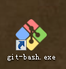

您现在的位置是：首页>彩云之南>个人博客模板
如何在github上搭建自己的博客——git操作
发布时间：2017-05-04编辑：Mrjcm浏览（390）评论览（14）
根据网上搜索资料结合这次自己搭建博客的经历，整理出来一点在git上面搭建博客的心得，在此与大家分享。希望大家能有所得。你需要准备git账号、一个本地静态的博客页面、Git bash(命令行工具)。接下来，只要按照步骤做下去的话，你也可以拥有一个自己的博客。
首先，你要有个GitHub账号(点击图片前往注册)
完成注册之后按照以下步骤
创建仓库：
完成后就会出现这个页面，点击设置
找到GitHub Pages，按图选择
点save保存,然后点击choose a theme随便选择一个主题
这时候就不用再管，而是在本地选择一个文件夹，准备将远程仓库克隆到本地。而在这个之前你要下载Git客户端(下载安装过程直接下一步就行)，然后打开gitbash

因为Git是分布式版本控制系统，所以需要填写用户名和邮箱作为标识
然后通过cd指令到达自己选择的文件夹

然后输入指令(都只是输入第一行指令后按enter)，你就会发现本地你选择的文件夹中就出现了一个和仓库名同名的文件夹
同理利用cd指令进入该文件夹
然后将准备好的页面代码放入该文件夹中

再次在输入指令(记住add后面是一个点，别忘了)
然后输入
这个指令之后会让你输入用户名和密码，输好之后等下就好了，然后进入git仓库，点击设置找到这个地方，如何上地址加上博客首页文件名就可以访问到了
然后输入地址就可以访问了
这里说明下，可能你会看到创建的仓库名是Mrjcma但是图上有的地方是Mrjcm。这是因为创建仓库是为了演示，你记得保持一致就行。
关键字词：黑色,个人博客,时间轴,响应式
上一篇：程序员应该如何高效的工作学习
下一篇：柴米油盐的生活才是真实